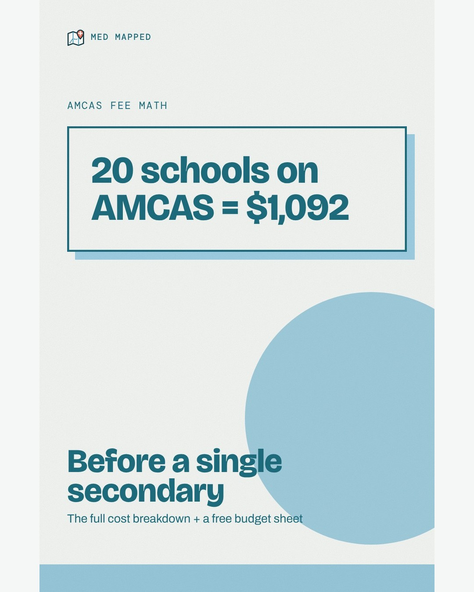
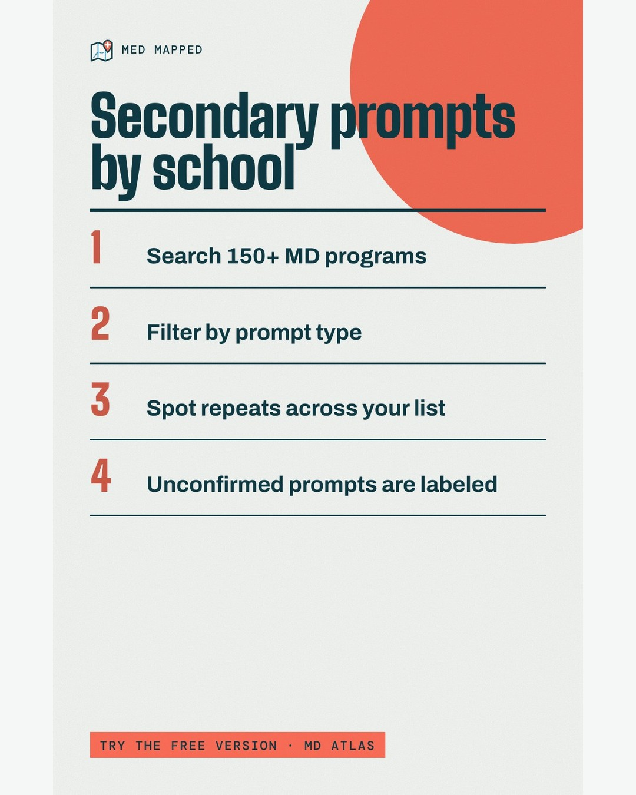
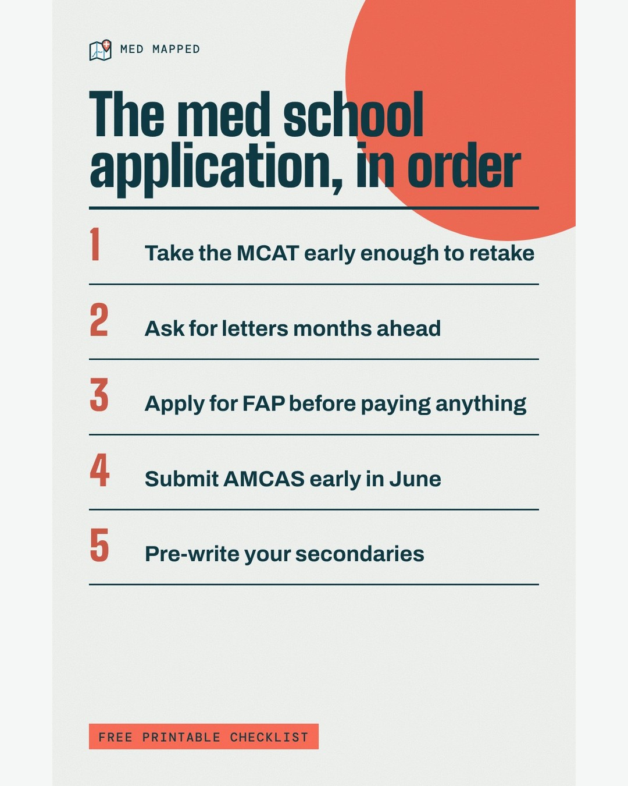
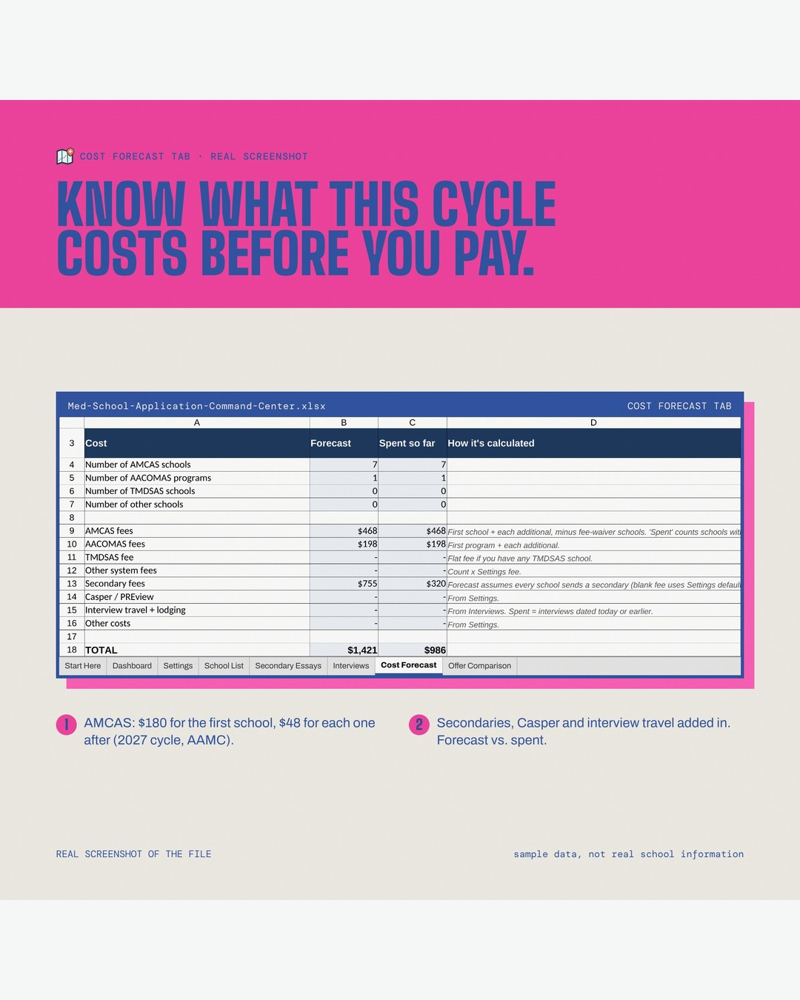
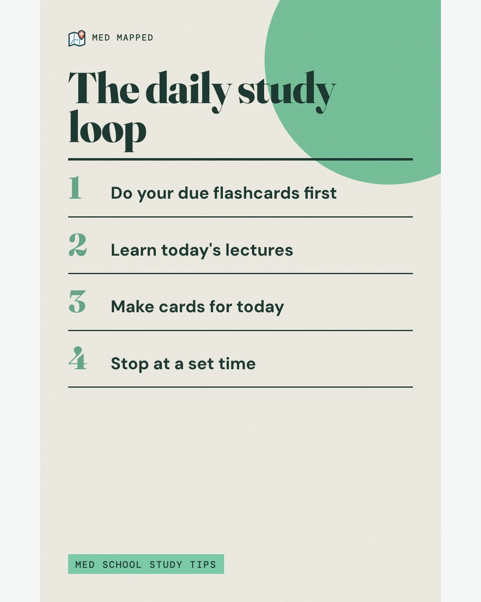
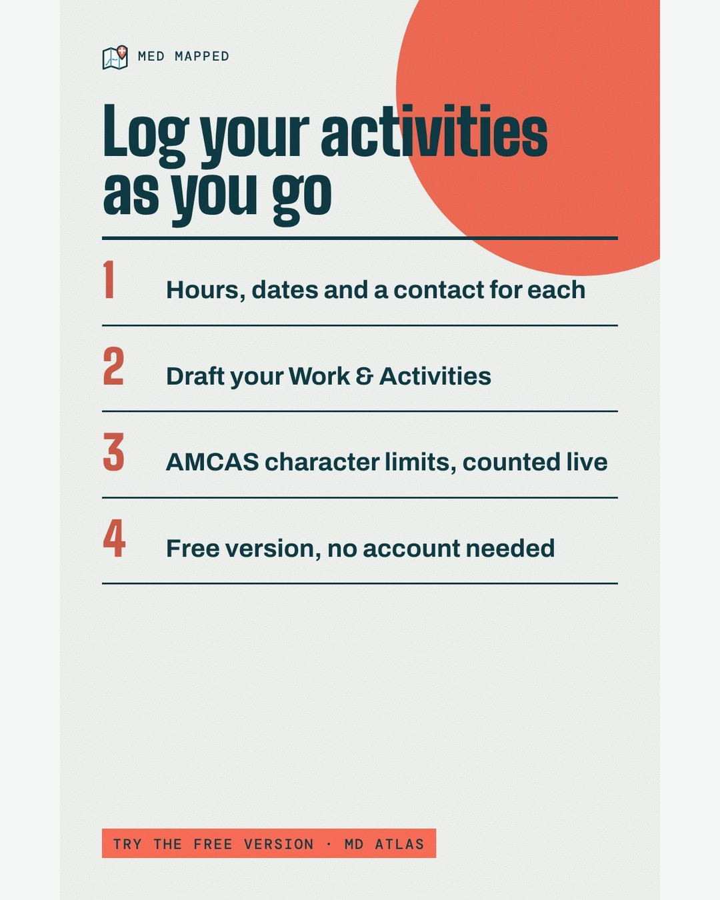
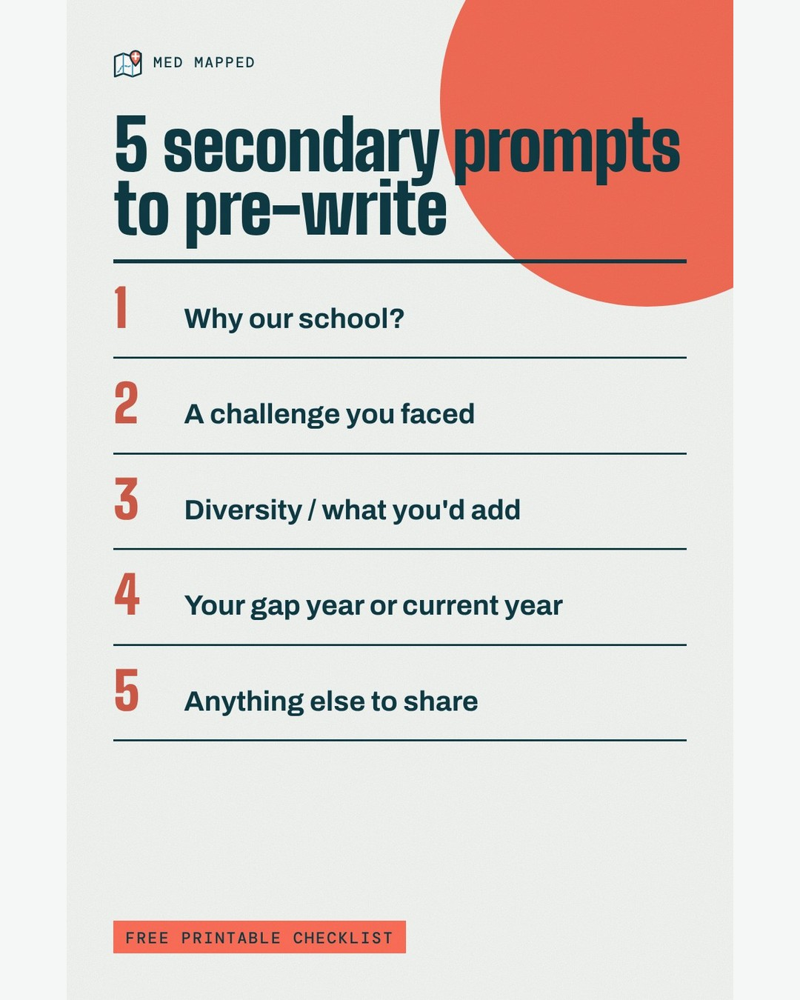
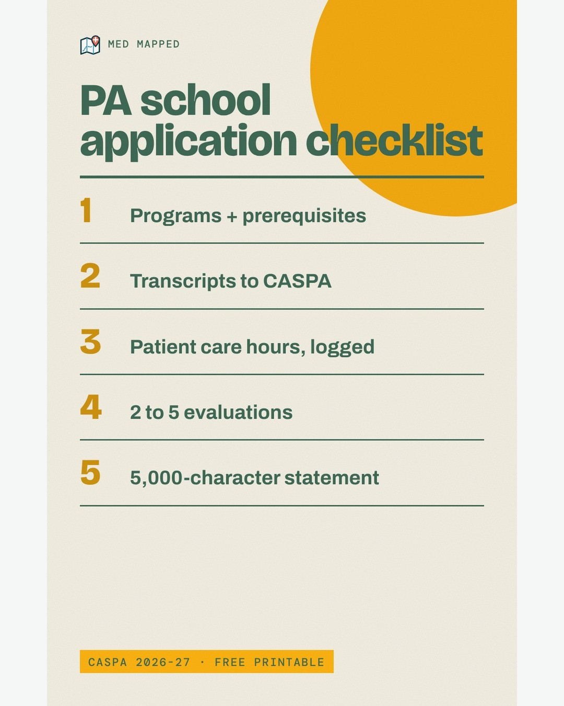

Med Mapped Reels
iPhone: tap the orange button, tap Download , then tap the blue ⬇ arrow in the address bar, tap the video, tap Share, tap Save Video . It's in Photos now!Android: tap the orange button and it saves to your Gallery.
Feed posts (in order) Long-press the image, then tap Save to Photos (or Add to Photos). Post it in Instagram with the copied caption.
2026-11-02 
Copy caption 2026-11-04 
Copy caption 2026-11-06 
Copy caption 2026-11-09 
Copy caption 2026-11-11 
Copy caption 2026-11-13 
Copy caption 2026-11-16 
Copy caption 2026-11-18 
Copy caption Meme captions Pick a trending meme clip in Instagram or Edits, put one of these as the top text, and use the shared caption below. Each says which reaction fits.
Pair with: confident → blank stare Copy top text
Pair with: pure panic Copy top text
Pair with: skeleton waiting / refreshing Copy top text
Pair with: way-too-excited hand raise Copy top text
Pair with: instant regret Copy top text
Pair with: nervous sweating Copy top text
Pair with: smug confidence Copy top text
Pair with: overthinking spiral Copy top text
Pair with: happy crying Copy top text
Pair with: awkward chewing Copy top text
Pair with: shocked pikachu energy Copy top text
Pair with: innocent whistle Copy top text
Pair with: blank stare Copy top text
Pair with: dramatic slow walk Copy top text
Pair with: proud parent tears Copy top text
Pair with: Squidward looking out the window Copy top text
Pair with: Kermit sipping tea Copy top text
Pair with: SpongeBob tired Copy top text
Pair with: Drake nope / yes Copy top text
Pair with: Gordon Ramsay "finally, some good food" Copy top text
Pair with: Homer backing into the bushes Copy top text
Pair with: Michael Scott "no, no, no" Copy top text
Pair with: Spider-Man pointing at Spider-Man Copy top text
Pair with: frantic typing Copy top text
Pair with: Kermit sipping tea Copy top text
Pair with: SpongeBob tired Copy top text
Pair with: Chloe side-eye Copy top text
Pair with: Patrick staring blankly Copy top text
Pair with: cat staring into the camera Copy top text
Pair with: Wednesday Addams stare Copy top text
Post caption for any meme Copy caption